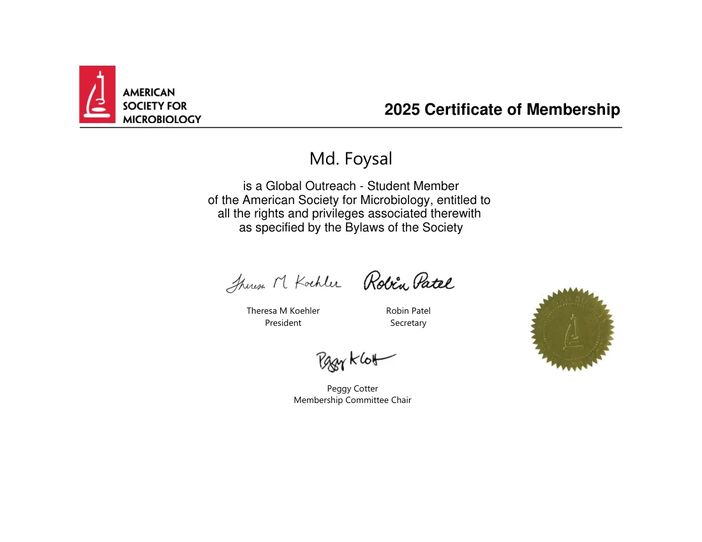

01
American Society for Microbiology
Global Outreach Student Member; 2025 certificate supplied.
Professional networks
Scientific societies, service organizations and community leadership.
Global Outreach Student Member; 2025 certificate supplied.
Membership profile shown in the source Google portfolio.
Membership/confirmation shown in the source Google portfolio.
Membership welcome message shown on the source site.
Membership confirmation shown on the source site.
Service and leadership activity listed on the source portfolio.
Office secretary role listed in the source Google portfolio.

American Society for Microbiology
Additional membership confirmations can be embedded here when original image/PDF files are supplied.